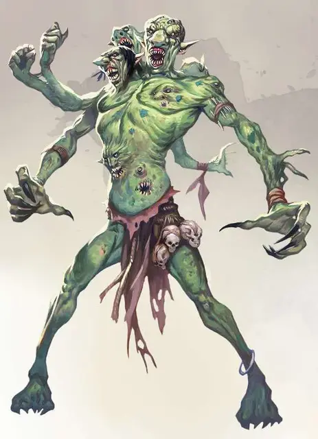

Лютый тролль
Dire Troll
Огромный Великан, обычно хаотично-злой

Класс Доспеха 15 (природный доспех)
Хиты 172 (15к12 + 75)
Скорость 40 футов
| мод | спас | ||
|---|---|---|---|
| СИЛ | 22 | +6 | +6 |
| ЛОВ | 15 | +2 | +2 |
| ТЕЛ | 21 | +5 | +5 |
| мод | спас | ||
|---|---|---|---|
| ИНТ | 9 | −1 | −1 |
| МДР | 11 | +0 | +5 |
| ХАР | 5 | −3 | +2 |
Навыки Восприятие +10
Сопротивление урону дробящий, колющий, рубящий от немагических атак
Иммунитет к состояниям отравление, испуг
Чувства тёмное зрение 60 футов, пассивное Восприятие 20
Языки Великаний
Опасность 13 (10000 опыта)
Бонус мастерства +5
Среда обитания Арктика, Горы, Лес, Подземье, Холмы
Особенности
Регенерация. Тролль восстанавливает 10 хитов в начале каждого своего хода. Если тролль получает урон огнём или кислотой, то в начале следующего хода он восстанавливает только 5 хитов. Тролль умирает только если ему нанести не менее 10 хитов урона кислотой или огнём, когда у него 0 хитов.
Действия
Мультиатака. Тролль совершает одну атаку Укусом и четыре атаки Когтями.
Укус. Рукопашная атака оружием: +11 к попаданию, досягаемость 10 футов, одна цель. Попадание: 10 (1к8 + 6) колющего урона плюс 5 (1к10) урона ядом.
Когти. Рукопашная атака оружием: +11 к попаданию, досягаемость 10 футов, одна цель. Попадание: 16 (3к6 + 6) рубящего урона.
Вихрь когтей (перезарядка 5-6). Каждое существо в пределах 10 футов от тролля должно совершить спасбросок Ловкости Сл 19, получая 44 (8к10) рубящего урона при провале или половину этого урона при успехе.
Описание
Тролли убивают и поедают всё подряд, в том числе, пусть и в редких случаях, других троллей. Такой каннибализм приводит к тому, что тролль вырастает до невероятных размеров. После чего у этих троллей появляется лютое желание поедать своих сородичей и продолжать всё больше расти.
Лютые тролли также увеличиваются в размерах, пересаживая на своё тело органы и плоть других существ. Когда кусок свежей плоти тролля совмещается с лютым троллем, его восстановительный фактор преобразует эту плоть в организм тролля. Ещё более ужасающими выглядят многочисленные руки, глаза, когти, и другие органы, которые ужасный тролль оторвал у своих жертв и пересадил в своё тело. Со временем, у этих существ собирается множество конечностей.
Тролли
Тролли, что после уничтожения смогли выжить и восстановить раны на своём теле, проявляют аномальные мутации. Часто подобные искаженные тролли появляются, если существо восстанавливается в присутствии магического излучения, планарной энергии, заболеваний, смертей в широких масштабах, или если тело было повреждено элементальными силами. Этих мутированных созданий также можно получить и сформировать с помощью обрядной магии злых заклинателей или собственными практиками троллей, как в случае с лютыми троллями.
Вапрак Разрушитель
Хоть тролли слабо набожны и редко задаются духовными вопросами, они боятся и поклоняются сущности, известной как Вапрак Разрушитель. Как и у множества низших божеств, истинная природа Вапрака довольно загадочна, но он всегда изображается как ужасное, деформированное зеленоватое существо, сильно напоминающее тролля. У него случаются приступы бездумного разрушения и постоянные бредни о планах и замыслах прочих божеств.
Тролли считают, что Вапрак пожирает тех, кто находится присмерти, но только если тролль уже приготовлен или переварен (убит огнём или кислотой). В ином случае божество выплевывает душу обратно в мир, чтобы возродить новое тело.